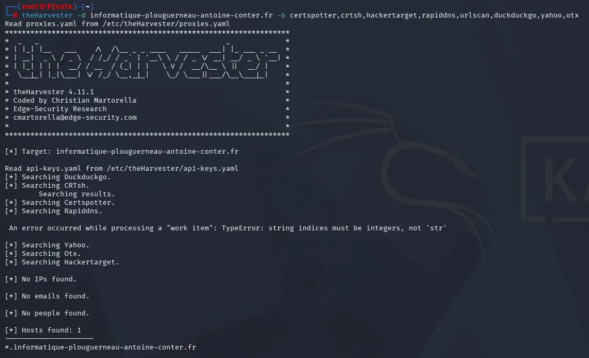
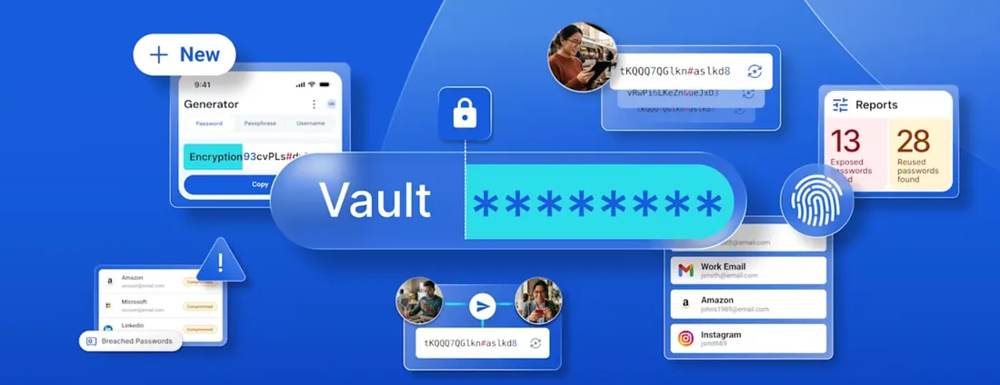
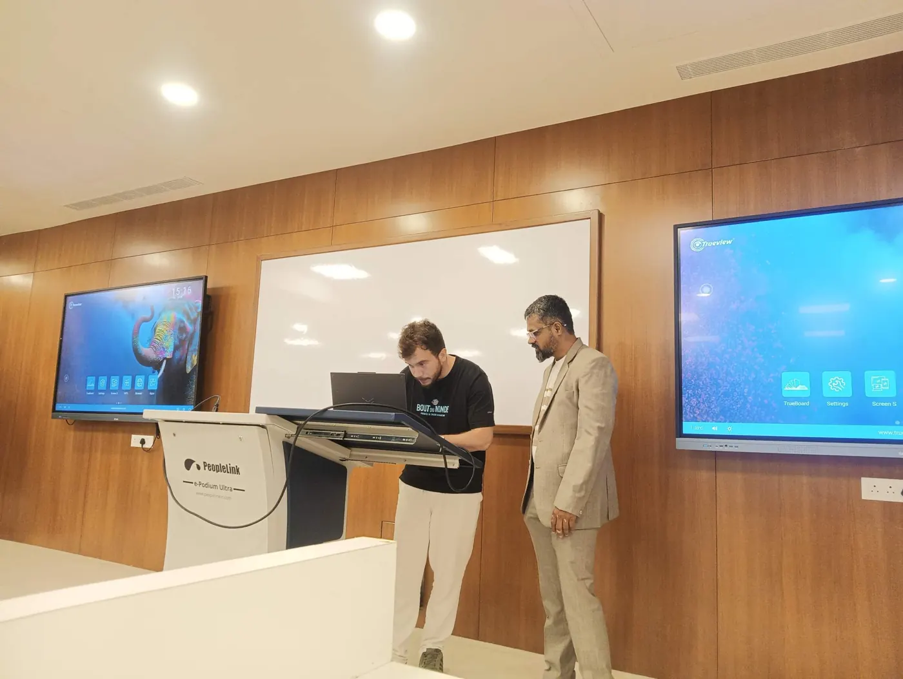

Votre email dans une fuite de données, votre téléphone sur un vieux forum, une photo qui révèle votre adresse : je cherche ce qu'un inconnu trouve sur vous en ligne, puis je vous aide à le faire disparaître et à vous protéger. Tout se fait à distance, partout en Finistère et en Bretagne.
OSINT veut dire « Open Source Intelligence » : le renseignement en sources ouvertes. C'est la méthode qu'utilisent les escrocs avant une arnaque ciblée, un faux conseiller bancaire ou un piratage de compte. Ils rassemblent tout ce qui traîne en ligne sur vous : moteurs de recherche, réseaux sociaux, annuaires, bases de fuites de données, métadonnées de photos et de documents.
L'audit OSINT fait la même recherche, mais pour vous et avec votre accord. Vous voyez exactement ce qu'un inconnu voit, et vous savez quoi corriger en priorité. Je n'utilise que des informations publiques, sans intrusion ni piratage.

Un vrai scan, réalisé sur mon propre domaine avec l'outil theHarvester.
Deux audits, selon que vous êtes particulier ou professionnel
Audit OSINT particulier
40 €
Ce qu'on trouve sur vous à partir de votre nom, de votre email et de votre téléphone, et comment le réduire.
Pour une TPE, un indépendant, une association ou une profession libérale : ce qu'un attaquant apprend sur votre structure avant de vous viser.
Emails professionnels exposés
Dirigeants et salariés visibles en ligne
Domaine, sous-domaines et site internet
Documents publiés avec des métadonnées
Rapport classé par risque, restitution en visio
Mise en place des protections
35 €de l'heure
Après l'audit, je vous aide à appliquer les corrections, à distance ou à domicile en Finistère nord.
Gestionnaire de mots de passe
Double authentification
Réglages de confidentialité
Demandes de suppression
Un audit ne se fait que sur vous-même ou sur une structure que vous représentez, avec votre accord écrit. Je ne fais pas de recherches sur une autre personne.
Les signes que vos données personnelles circulent
Des SMS ou des mails d'arnaque qui citent votre nom ou votre banque
Un faux conseiller qui connaît votre adresse ou votre date de naissance
Un compte piraté alors que vous n'avez rien cliqué
Une alerte « votre mot de passe a été trouvé dans une fuite »
Des inconnus qui vous écrivent en connaissant vos habitudes
Une entreprise dont les salariés reçoivent des faux mails du patron
Ces arnaques ciblées s'appuient presque toujours sur des informations trouvées en ligne. L'audit OSINT montre lesquelles, et d'où elles viennent.
Ce que je cherche pendant l'audit
Fuites de données
Vos adresses email et vos identifiants dans les bases issues de piratages de sites, et les mots de passe qui y circulent encore.
Réseaux sociaux
Ce que vos profils publics révèlent : date de naissance, famille, lieu de travail, habitudes, photos de votre domicile.
Annuaires et moteurs
Votre nom, votre adresse et votre téléphone sur les annuaires, les forums, les anciennes annonces et dans les résultats de Google.
Photos et documents
Les métadonnées cachées : position GPS d'une photo, nom de l'auteur ou logiciel d'un document publié.
Pour les professionnels
Emails de l'équipe, organigramme reconstituable, sous-domaines oubliés, documents internes indexés, faux sites qui imitent le vôtre.
Protéger vos données ensuite
L'audit n'a d'intérêt que si on agit. Je vous remets un plan de protection en langage simple : quels mots de passe changer, où activer la double authentification, quels réglages de confidentialité modifier, quels contenus faire retirer.
Vous pouvez demander la suppression de données personnelles à un site, et le déréférencement de certains résultats à Google, grâce au droit à l'effacement prévu par le RGPD. Je vous aide à préparer ces demandes.

Un gestionnaire de mots de passe : la première protection que je mets en place.
100 % à distance, partout en Bretagne
Un audit OSINT n'a pas besoin d'un déplacement : la recherche se fait en ligne, le rapport vous arrive par email et on en parle par téléphone ou en visio. Je réalise des audits dans tout le Finistère, à Brest, Quimper, Morlaix ou Landerneau, et dans toute la Bretagne : Côtes-d'Armor, Morbihan et Ille-et-Vilaine, de Saint-Brieuc à Lorient, Vannes et Rennes.
Si vous êtes en Finistère nord et que vous préférez qu'on mette les protections en place ensemble, je viens aussi chez vous ou dans vos locaux, depuis Plouguerneau.
Comment ça se passe
Premier échangePar téléphone ou en visio, pour définir le périmètre : vous, votre famille, votre structure.
Accord écritVous confirmez que l'audit porte bien sur vous ou sur votre structure.
Recherche et rapportQuelques jours plus tard, vous recevez un rapport écrit, classé par risque.
Restitution et protectionOn passe le rapport en revue ensemble et on corrige l'essentiel.
Pourquoi me confier cet audit
Je suis étudiant ingénieur en cybersécurité à l'ISEN Brest. J'ai passé trois mois en stage à Parul University, en Inde, au sein d'une équipe de cybersécurité, sur des tests d'intrusion réels. J'utilise les mêmes outils que les professionnels de la sécurité. Vous parlez à une seule personne, qui fait la recherche et vous l'explique, et vos informations ne sont jamais revendues ni partagées.

Présentation d'un travail en cybersécurité, Parul University
L'audit OSINT particulier coûte 40 €. Pour un professionnel, le prix se fait sur devis, selon la taille de la structure. La mise en place des protections après l'audit est facturée 35 € de l'heure.
Comment savoir si mon email a fuité ?
Des services publics permettent de vérifier si une adresse email apparaît dans une fuite de données connue. L'audit OSINT va plus loin : il recense les fuites, les sites concernés, les informations qui ont circulé avec votre email, et vous dit quoi changer en priorité.
Mon mot de passe a été trouvé dans une fuite, que faire ?
Changez-le tout de suite sur le site concerné et partout où vous l'avez réutilisé, puis activez la double authentification. Un gestionnaire de mots de passe évite que le problème se reproduise. Je peux le mettre en place avec vous.
Un audit OSINT est-il légal ?
Oui. Je n'utilise que des informations publiques et je ne réalise l'audit que sur vous-même ou sur une structure que vous représentez, avec votre accord écrit. Je n'accède à aucun compte et je ne contourne aucune protection.
Puis-je faire un audit sur une autre personne ?
Non. Rechercher des informations sur quelqu'un sans son accord peut porter atteinte à sa vie privée. Pour un proche, par exemple un parent âgé, l'audit se fait avec son accord.
Faut-il se déplacer ?
Non. L'audit se fait entièrement à distance : la recherche est en ligne, le rapport arrive par email et la restitution se fait par téléphone ou en visio, partout en Bretagne.
Combien de temps faut-il ?
Comptez quelques jours entre notre premier échange et la remise du rapport. La restitution dure environ une demi-heure pour un particulier, un peu plus pour une structure.
Peut-on faire supprimer ce que vous trouvez ?
Souvent, oui. Le RGPD prévoit un droit à l'effacement : on peut demander à un site de supprimer vos données personnelles, et à Google de déréférencer certains résultats. Je vous aide à rédiger ces demandes. Les données issues de fuites ne peuvent pas être effacées, mais on rend les mots de passe concernés inutilisables.
Est-ce un audit de conformité RGPD ?
Non. L'audit OSINT mesure ce qui est exposé en ligne et comment le réduire. Ce n'est ni un audit de conformité RGPD ni une certification.
Savoir ce qu'on trouve sur vous
Audit OSINT à 40 € pour un particulier, sur devis pour un professionnel. À distance, partout en Bretagne.